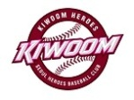

단 운영은 기존의 7개 구단이 모그룹의 홍보 지원금으로 운영되는 것과는 달리, 이른바 '팀 스폰서' 방식으로 이루어지는 것이 특징이다. 이는 국내 기업들과 후원계약을 맺어 구단 이름을 팔고, 유니폼 광고 등을 유치하여 운영자금을 확보하는 방식이다. 복수의 스폰서를 두어 가장 많은 자금을 댄 후원사가 구단 명칭으로 결정되고, 나머지 후원사는 유니폼 앞면과 견장, 헬멧과 모자 등을 이용하여 홍보할 수 있다. 첫 스폰서로 민간 담배회사인 우리담배(주)가 2008년부터 2010년까지 3년 동안 연간 100억 원씩 후원하기로 하였다가 가입금 미납 사태가 불거지자 2008년 7월 스폰서 계약을 철회하였다. 2010년 2월 넥센타이어(주)와 메인스폰서십 계약을 체결하여 2018년까지 구단 명칭을 ‘넥센 히어로즈’로 사용하였다. 2019년 1월부터는 키움증권(주)과 메인 스포서 계약을 새롭게 체결하고 ‘키움 히어로즈’로 활동하고 있다.
